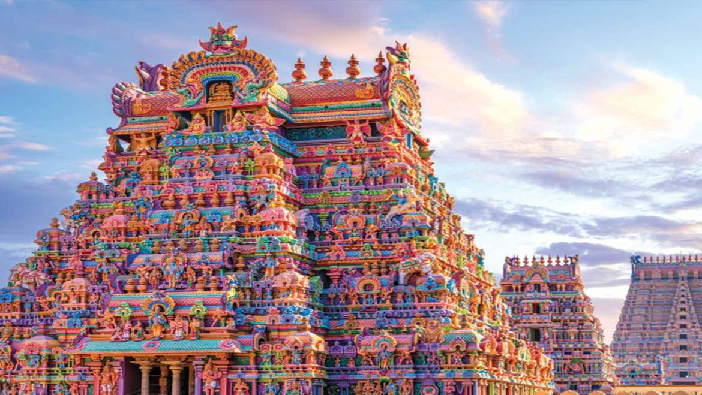
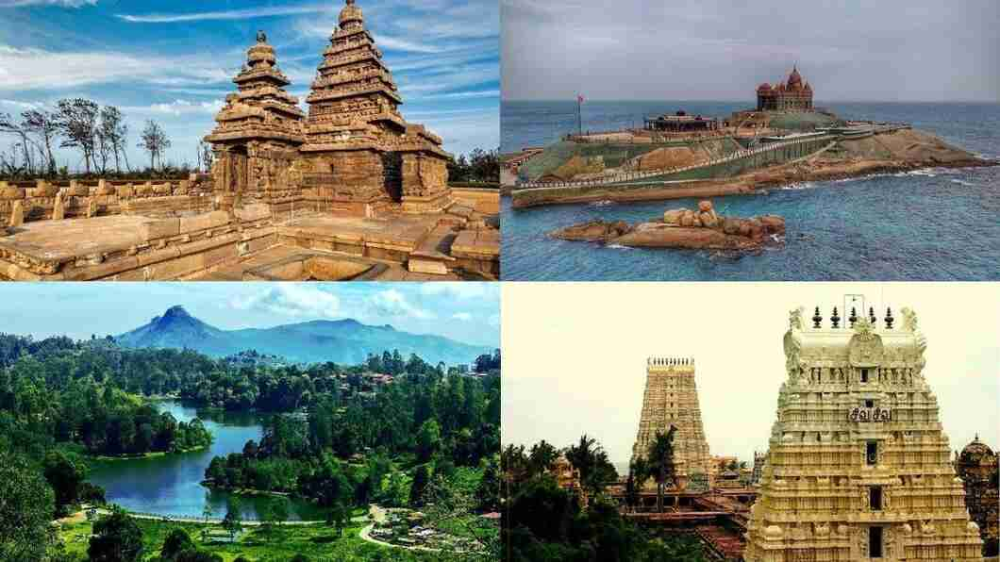
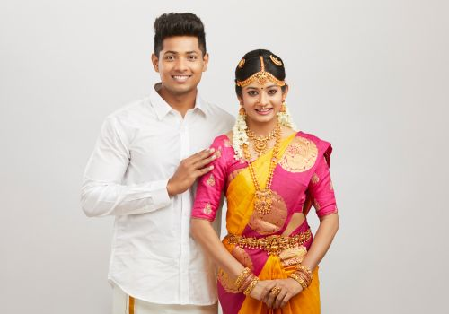
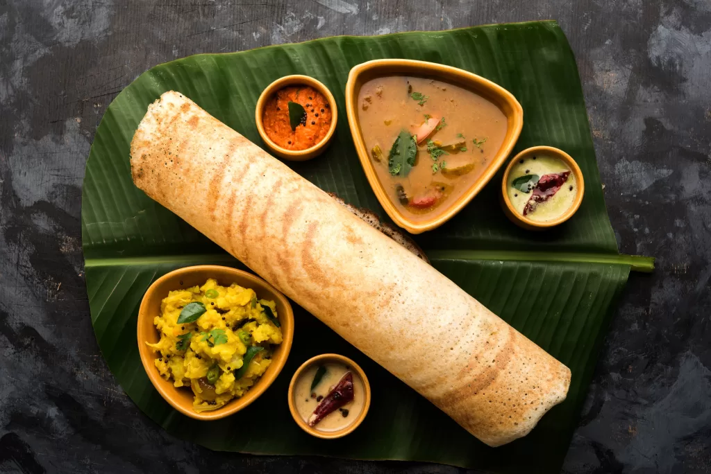

| ✧ Aspect | Information |
|---|---|
| ✧ Capital | Chennai |
| ✧ Chief minister | Edappadi K. Palaniswami |
| ✧ Largest City | Chennai |
| ✧ Districts | 37 |
| ✧ Official Language | Tamil |
| ✧ Other Language | Telugu, Kannada and Malayalam |
| ✧ Population | Approximately 77 million |
| ✧ Area | 130,058 square kilometers |
| ✧ Major Rivers | Cauvery, Vaigai, Thamirabarani |
| ✧ Major Industries | Automobiles, Textiles, Software Services, Agriculture |
| ✧ Popular Places | Madurai Meenakshi Temple, Rameswaram, Kanyakumari, Ooty |
Traditional in Tamil Nadu for men includes dhoti and shirt or veshti, while for women, it includes saree or pavada blouse. Traditional attire is often worn during festivals and cultural occasions.
Tamil Nadu, situated in the southern part of India, boasts a rich historical legacy dating back to ancient times. The region has been home to several ancient civilizations and has witnessed the rule of various dynasties and empires.
The early history of Tamil Nadu is marked by the flourishing of the Tamil Sangam literature, which provides insights into the culture, society, and governance of ancient Tamil Nadu. The Sangam period also saw the emergence of powerful kingdoms such as the Cholas, Cheras, and Pandyas.
Tamil Nadu's history is intertwined with the rise of Buddhism and Jainism, as well as the influence of trade with ancient Rome and Greece. The region was later ruled by the Pallavas, Cholas, and the Vijayanagara Empire, each leaving a significant impact on the culture and architecture of Tamil Nadu.
The colonial era witnessed the arrival of European powers, with the Portuguese, Dutch, French, and British establishing their presence in Tamil Nadu. The British East India Company eventually gained control over the region, leading to the emergence of the Madras Presidency.
Tamil Nadu played a pivotal role in India's freedom struggle, with leaders like C. Rajagopalachari, Periyar E. V. Ramasamy, and K. Kamaraj actively participating in the movement. Post-independence, Tamil Nadu emerged as one of the leading states in India, known for its cultural heritage, economic prowess, and social reforms.



